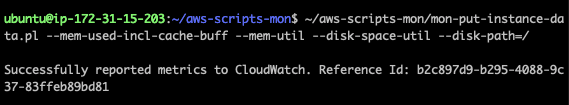
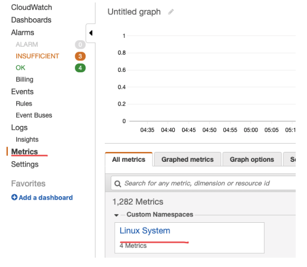
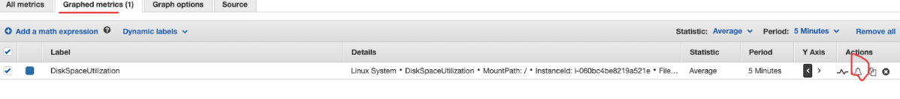

EC2 告警设置
1.Health check:
使用 aws LoadBalance 控制台设置,或者使用 aws 53 route 设置
路径:Aws Console->LoadBalance -> monitoring-> alarm ->5xx
2.Cpu check:
使用 aws Ec2 控制台可以设置
Aws Console->Ec2-> monitoring-> alarm
dev-solr
3.Free disk space & Free memory
官方文档:https://docs.aws.amazon.com/AWSEC2/latest/UserGuide/mon-scripts.html
常用应用场景: zk,solr
过程：
安装 perl
sudo apt-get update
缺少环境变量,解决方法
vi ~/.bashrc
export LC_ALL=C
source ~/.bashrcsudo apt-get install unzip
（老服务器可能出现问题，解决方法看常见问题 1，或者 sudo apt-get -f install）
sudo apt-get install libwww-perl libdatetime-perl
下载 cloudwatch 包
curl https://aws-cloudwatch.s3.amazonaws.com/downloads/CloudWatchMonitoringScripts-1.2.2.zip -O
安装包
unzip CloudWatchMonitoringScripts-1.2.2.zip && \
rm CloudWatchMonitoringScripts-1.2.2.zip && \
cd aws-scripts-mon测试可用性
~/aws-scripts-mon/mon-put-instance-data.pl --mem-used-incl-cache-buff --mem-util --disk-space-util --disk-path=/
返回 success 就是成功（可能出现问题 2,3,4）
设置 crontab crontab -e
*/5 * * * * ~/aws-scripts-mon/mon-put-instance-data.pl --mem-used-incl-cache-buff --mem-util --disk-space-util --disk-path=/ --from-cron查看 Cloud watch 记录 打开 Aws console => Cloudwatch => Metrics => 查找对应 instance Id

设置警报 
常见问题:
服务器 太老 需要安装 aws 的一些包
sudo apt-get install linux-aws-headers-4.4.0-1094
Ubuntu perl 问题，缺少环境变量
https://blog.csdn.net/djh_xing/article/details/54944995vi ~/.bashrc
export LC_ALL=C
source ~/.bashrc没有设置 iam
IAM 没有权限
需要给 IAM 加以下权限
cloudwatch:PutMetricData
cloudwatch:GetMetricStatistics
cloudwatch:ListMetrics
ec2:DescribeTags